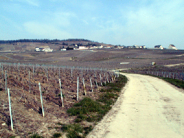
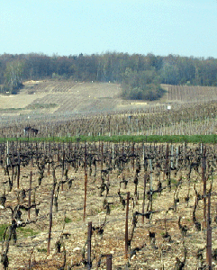
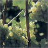
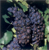
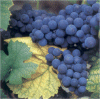
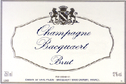
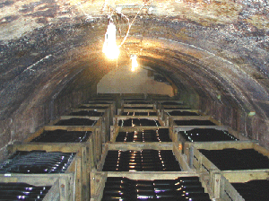
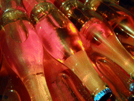

|

La route qui mène de Damery à
Fleury serpente au milieu des vignes. Le plateau qui
surplombe la vallée est couvert de forêts, le
fond de la vallée, impropre à la culture de la
vigne, est voué aux cultures "ordinaires", le sol y
étant plus fertile.
|

Fin mars, la vigne, taillée tout au long
de l'hiver, est liée suivant des règles
strictes. Différentes tailles sont pratiquées
suivant le cépage et le rendement
espéré. Les panneaux de couleurs qui sont dans
les vignes sont des repères pour les traitements
faits par hélicoptères. Cela m'a semblé
curieux mais un hélicoptère peut agir alors
que tracteurs et hommes à pieds pataugeraient dans la
boue... En cas d'attaque de maladie, la rapidité de
l'intervention est garante du succès du traitement.
|
Trois cépages sont utilisés :
|

|

|

|
|
Chardonnay
|
Pinot noir
|
Pinot meunier
|
Un champagne issu du seul Chardonnay est un "Blanc
de Blancs".
Pour arriver dans nos flûtes le champagne
doit être dorloté pendant plusieurs saisons.
|
Aussitôt cueilli, le raisin est
pressé et le moût obtenu fermente dans des
cuves comme tous les vins. Lorsque la fermentation est
terminée, fin mars début avril, le vin est
devenu clair et le moment important est arrivé :
l'assemblage. Il s'agit de déterminer la
composition du mélange qui va donner le futur
champagne. Chaque maître de chai a son secret. Si la
qualité de la récolte est remarquable on
n'utilise que des vins de l'année et on crée
un "millésime".

|
|
Le vin est mis en bouteille après ajout de
levures naturelles et d'un peu de sucre de betterave.

|

Champagne rosé mis en bouteille
récemment . Il est obtenu par assemblage avec un peu
de vin de Champagne rouge. La couleur de la capsule indique
l'année de récolte.

|